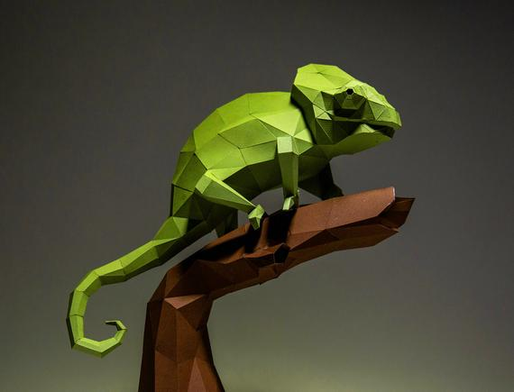
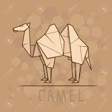

Origami Instructions And Diagrams
Pigeon

- Pigeons are incredibly complex and intelligent animals.
- Pigeons are renowned for their outstanding navigational abilities.
- Pigeons mate for life, and tend to raise two chicks at the same time.
- Both female and male pigeons share responsibility of caring for and raising young.
Teddy Bear

- The term bear-hug was first recorded in 1846.
- The Teddy Bears' Picnic song was originally called The Teddy Bear Two Step.
- The Oxford English Dictionary dates the first use of the term teddy bear to 1906.
- In 1902 in Germany, Steiff launched “Bear 55 PB”, the first toy bear with jointed arms and legs.
Panda

- Pandas are good at climbing trees and can also swim.
- Pandas have so many fans because they look cute.
- Pandas are "lazy" — eating and sleeping make their day.
- An adult can eat 12–38 kilos of bamboo per day!
Flying Cicada

- Cicadas can survive a huge fall as babies, or nymphs.
- The loud whirring or buzzing sound you hear is an all-male cicada chorus.
- Most have red-orange eyes.
- Females may be attracted to the sound of motors.
- Their short adult life is not unusual for bugs.
Chameleon

- Their feet work like salad tongs.
- Almost half of all known species live in Madagascar.
- They mainly change colour in order to communicate or regulate body temperature.
- Skin crystals enable them to change colour at will.
- Unlike many lizards, Chameleons can't regrow their tails.
Camel

- There are two types of camels: One humped or “dromedary” camels and two humped Bactrian camels.
- Camels have three sets of eyelids and two rows of eyelashes to keep sand out of their eyes.
- Camels have thick lips which let them forage for thorny plants other animals can't eat.